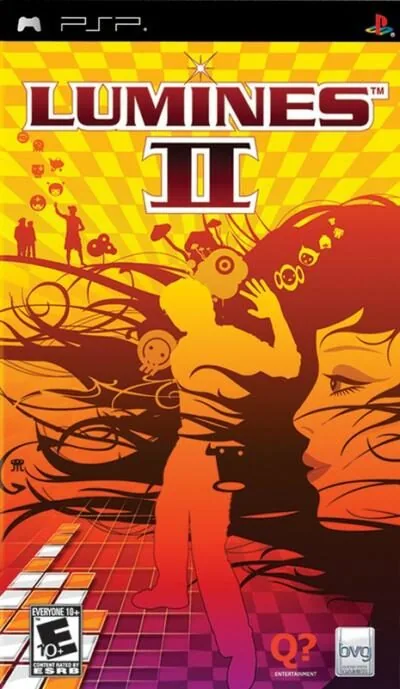

PSP
Lumines II
- Año: 2006
- Desarrollador: Q Entertainment
- Género: Puzle
- Jugadores: 2 jugadores
Nuestra misión es la de controlar cubos formados por cuatro piezas de distintos colores. Los cubos caen por la pantalla para formar con ellos rectángulos del mismo color. Una línea de tiempo vertical se desplaza a lo largo de la pantalla de izquierda a derecha haciendo desaparecer todos los rectángulos del mismo color que encuentre a su paso. Los bloques sin encajar se van amontonando y el juego finaliza cuando la pila alcanza la parte superior de la pantalla. Lo que le diferencia de otros juegos del estilo es la relación existente entre los efectos que vemos en pantalla y su interacción con la música.
Dispone de muchos niveles (cada uno de ellos con música y efectos visuales distintos), con varios modos de juego diferentes (reto, secuencia, misión, puzzle, contra-reloj), así como 60 habilidades y 100 puzzles distintos.
En cuanto al apartado musical vamos a encontrar videoclips de gente como Beck, Black Eyed Peas,The Chemical Brothers, Hoobastank y muchos más..
Controles
que el joystick mueva las piezas (abajo: bajar más rápido). Según el primer juego: B (✕) y A (○) giran a la derecha, y X (△) e Y (□) a la izquierda. ¿Va fluido?
Mando de PSP. El joystick mueve la cruceta y también la palanca analógica, porque muchos juegos de PSP solo se mueven con ella.
| Panel | Juego |
|---|---|
 | ✕ |
 | ○ |
 | R |
 | □ |
 | △ |
 | L |
 | Start |
 | Select |
+  | Salir del juego |
El panel en PSP


Argumento
Recopilado de internet (2026-11-04). Lo marcado con ⚠️ no está probado en la bartop.
No tiene historia: es un puzle musical de Tetsuya Mizuguchi (el de Rez), en el que cada fase tiene su propia «piel» con fondo, colores y música.
Jugabilidad
Recopilado de internet (2026-11-04). Lo marcado con ⚠️ no está probado en la bartop.
- Piezas de 2×2 de dos colores caen en un tablero de 16×10. Se giran, se mueven a los lados y se dejan caer. Al tocar algo, la parte que queda libre se separa y sigue cayendo.
- Cuadrados: cuatro bloques del mismo color en 2×2 forman un cuadrado (y se pueden hacer más grandes).
- La línea del tiempo: una línea vertical barre el tablero de izquierda a derecha, al ritmo de la música, y borra los cuadrados terminados que toca. Borrar varios en pasadas seguidas multiplica los puntos; dejar el tablero vacío o de un solo color da bonus.
- Bloques especiales: con una gema dentro; al usarlos borran todos los bloques de su color conectados.
- Se pierde cuando los bloques llegan arriba. La puntuación máxima es 999.999.
- Cada piel cambia el fondo, los colores, la música y la velocidad de la línea.
- Novedades de Lumines II: el modo desafío pasa a cuatro clases (B, A, S y Enduro); nuevos modos Misión, editor de pieles y Secuenciador (para hacer música); repeticiones en el contrarreloj. Vuelven el contrarreloj, el puzle y los duelos.
Botones según las guías (⚠️ por confirmar)
| Mando de PSP | Panel | Acción |
|---|---|---|
| Cruceta |  | Mover la pieza a los lados |
| Cruceta abajo |  | Bajarla más rápido (un punto por fila) |
| ✕ y ○ | y | Girar a la derecha |
| △ y □ | y | Girar a la izquierda |
- Hay tres configuraciones de botones, una para girar con L y R. En las versiones europea y americana, ✕ acepta y △ vuelve en los menús. ⚠️ Los botones son los del primer juego.
Guía de niveles
Recopilado de internet (2026-11-04). Lo marcado con ⚠️ no está probado en la bartop.
- Modo desafío en cuatro clases: B (principiantes), A (intermedio), S (avanzado) y Enduro (con todas las pieles, se abre al dar una vuelta a las tres primeras).
- ⚠️ No he encontrado la lista de pieles: ver «Vídeos».
Objetos
Recopilado de internet (2026-11-04). Lo marcado con ⚠️ no está probado en la bartop.
| Objeto | Qué hace |
|---|---|
| Bloque especial (con gema) | Borra todos los bloques de su color conectados |
Fuentes
Trucos y secretos
Recopilado de internet (2026-11-04). Lo marcado con ⚠️ no está probado en la bartop.
- Al dar una vuelta a las clases B, A y S se abre la clase Enduro.
- ⚠️ No he encontrado trucos.
Longplay

Partida de la versión PSP (42 min), de Longplay Studio 313: Lumines II Gameplay (Playstation Portable).